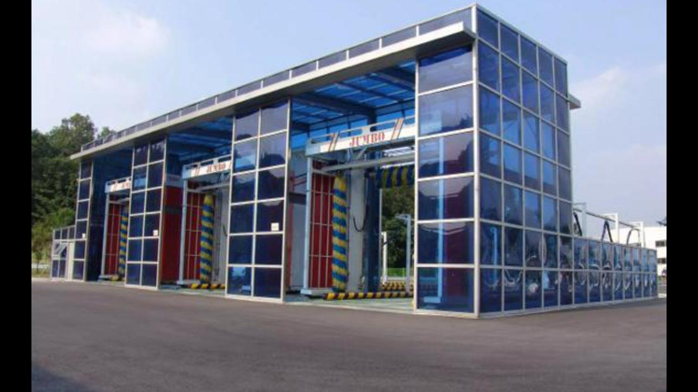
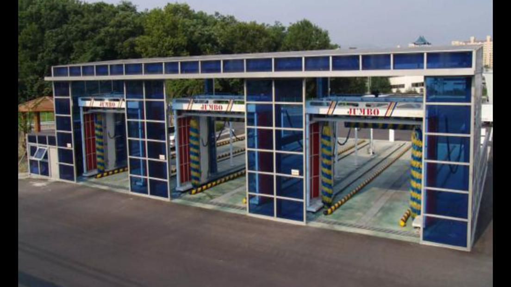
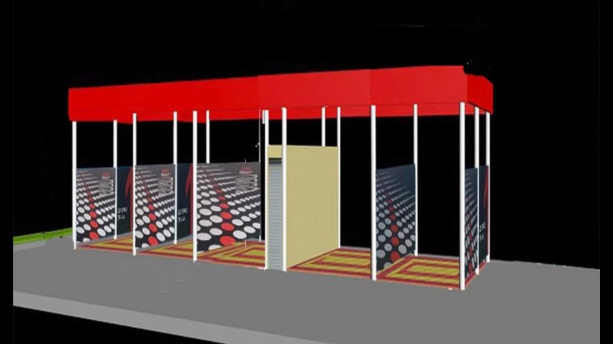

.jpeg)



Lavage de Station
Avantages :
- Maintenir la voiture
- Plus propre pour la voiture
- Gagner du temps en seulement cinq minutes
- Prévention de la rouille de la voiture
- Convivial et preuve de maintenance
- Facilité de paiement et d'utilisation
- Blanchisserie à tout moment 24/7
Données Techniques
| No. | Descriptions des Fonctions | Détails de la Marque | Remarques |
|---|---|---|---|
| (1) | Nos machines de lavage de camions-poubelles peuvent également laver des bus et des camions | 2.4 Équipement de prélavage de type "drive through" pour les grands véhicules | Épingle d'Allemagne |
| (2) | Basé sur l'original T.S.I -305 Nous conservons les brosses latérales pour laver les côtés des camions Supprimer la brosse supérieure | 2.5 Équipement de lavage de châssis et de pneus de véhicules lourds
2.6 Machine de lavage automatique pour gros véhicules de type "rouleau" | Japon NSK
Allemagne PEPPERL+FUCHS |
| (3) | Laver profilé à l'avant et à l'arrière du camion-poubelle avec de l'eau sous haute pression. | 2.7 ÉQUIPEMENT DE BROSSAGE ET DE SÉCHAGE POUR BUS ET CAMION |
France schneider Taiwan Delta |
| (4) | Système de mélange de produits chimiques intelligent. Système de suspension innovant avec rails sans résistance Séchage rapide intégré unique |
2.8 Équipement de pulvérisation de produits chimiques antiviraux de type "drive through"
2.9 Frais d'emballage spéciaux, allocation d'installation |
Allemagne PEPPERL+FUCHS |
| (5) | Système d'alarme de sécurité vocale numérique Système de vérification de panne Système anti-gel à une touche | Contacteur taly New Dotz Pompe de dosage de liquide Galvanisation à chaud Cadre en acier inoxydable de haute résistance 416 Buse en acier inoxydable | 70x60 Mètre
1 camion/5 minutes environ 850L/minute 75kw/h |
| (6) | Consommation d'énergie, consommation de produits chimiques, consommation d'eauMachine | ||
| (7) | Pression de rinçage : 3-4kg/cm² Plage de nettoyage : châssis de véhicule, roues et moyeux Lorsque le véhicule passe à travers |
Meilleur que les exigences de 3kg/cm² dans les documents d'appel d'offres Automatiquement et manuellement | La puissance totale du moteur est de 6 ventilateurs * 5,5, chacun avec un total de 33KW. |
| (8) | Pour l'équipement pendant 1 minute, le taux de séchage à l'air est ≥90% Drive-through. Mode de démarrage : démarrage automatique par induction photoélectrique | Deux groupes de brosses (brosses en nylon) Deux groupes de brosses latérales Roulis (lavage à brosse, lavage sans contact) | 2.utilisation de la méthode de séchage supérieur + latéral ; Pression d'air 0,7 Mpa |